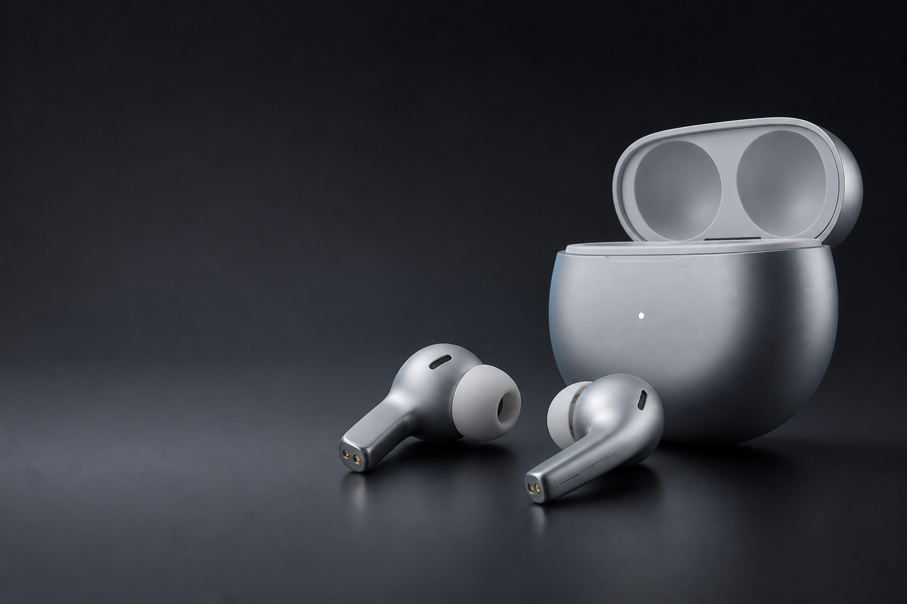
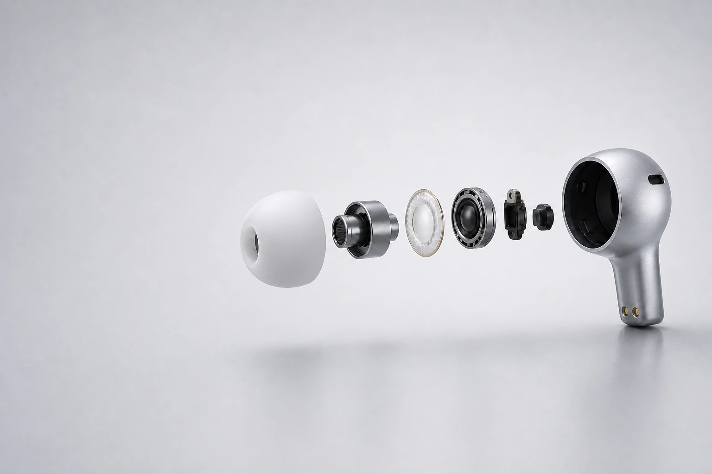
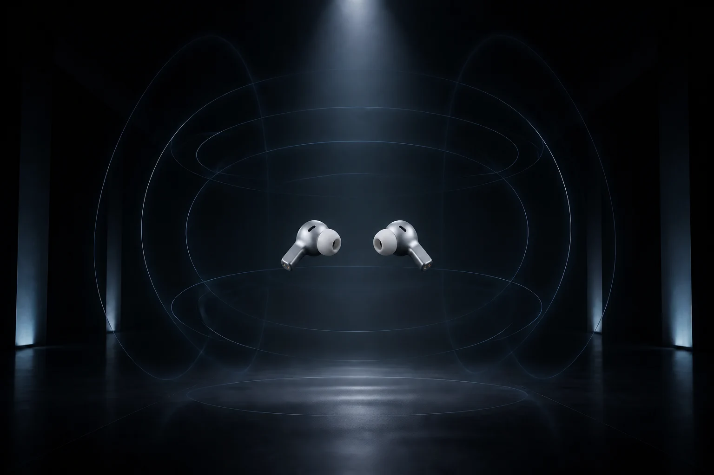
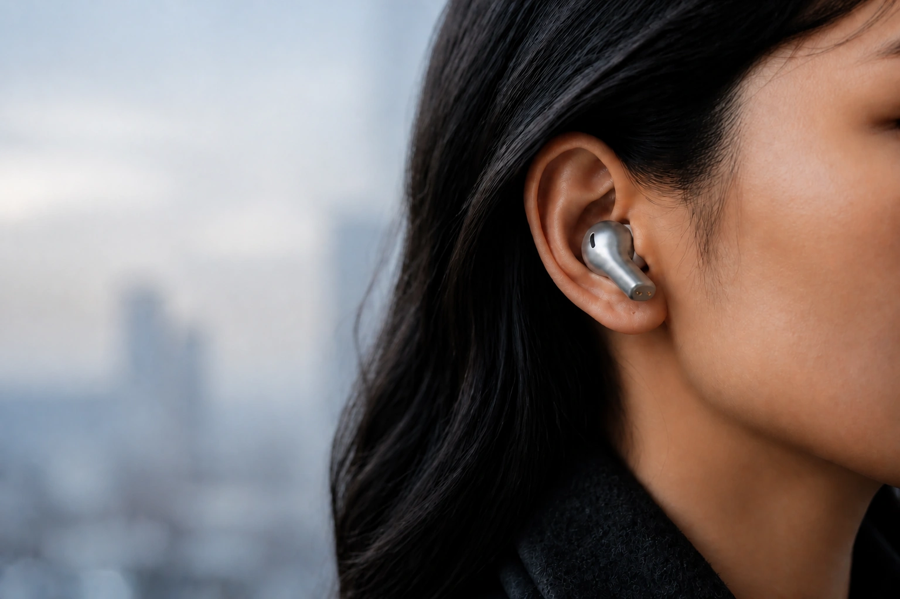
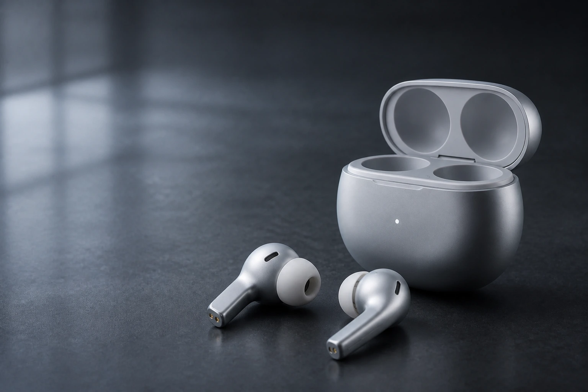

Vela One Highlights
戴上它世界退后
降噪、音质、空间感、佩戴与续航，在同一件产品里依次展开。
智能降噪
把喧闹留在外面
轨道、人群与城市声退到远处，只留下你想听见的部分。
VELA 双芯声学系统
每一层都听得见
低频更有力量，人声与高频依然清晰细腻。再靠近一点，看见声音如何发生。

LHDC-V5最高 24-bit/192kHz
双 DAC高低频独立驱动
11 mm + 6.7 mm双声学单元协同
高解析音频认证
独立空间音频
声音不只在耳边
动态头部追踪让方向与距离始终稳定，声场从面前延伸到四周。

轻盈贴合
轻到忘记存在
柔和曲线顺着耳形贴合，让长时间通勤和聆听依然保持自在。

续航充电
从清晨听到夜晚
8 小时单次聆听

- 颜色
- 冰银
- 聆听模式
- 智能降噪与通透模式
- 单次续航
- 8 小时单次续航
- 连接方式
- 无线蓝牙连接